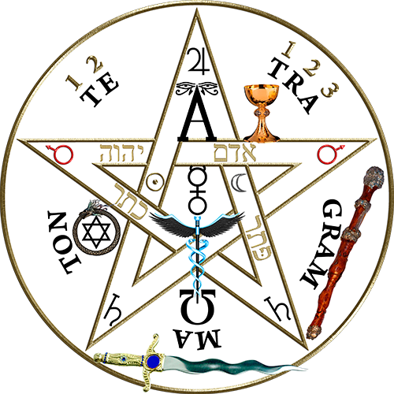

Oraciones



Me envuelvo hoy día y ato a mí, la fuerza poderosa de la Santísima Trinidad y las tres divinas personas. Me envuelvo hoy día y ato a mí la fuerza del Cristo y de la madre Maria, la fuerza de la crucificación, muerte, resurrección y ascensión. Me envuelvo hoy día y ato a mí, la fuerza del amor de los Querubines, la obediencia de los ángeles, el servicio de los arcángeles, la esperanza de la resurrección y la vida, las oraciones y la fe de los maestros, la inocencia de los santos inocentes y las buenas obras de los que enseñan. Me envuelvo hoy día y ato a mí, el amor maternal y la pureza de la madre Maria. Me envuelvo hoy día y ato a mí, la fuerza de Dios para orientarme. El poder de Dios para sostenerme, la sabiduría de Dios para guiarme, el ojo de Dios para prevenirme, el oído de Dios para escucharme, la palabra de Dios para apoyarme, la mano de Dios para defenderme, el camino de Dios para dirigir mis pasos, el escudo de Dios para protegerme, los ejércitos de Dios para darme seguridad contra las trampas de los demonios, contra las tentaciones de los vicios, contra las inclinaciones de la naturaleza, contra todos los que desean el mal de lejos o de cerca, estando yo solo o en la multitud. Convoco hoy en día a todas esas fuerzas poderosas que están entre mi y esos males, contra los encantamientos de los falsos profetas, contra las leyes negras del mal, contra las leyes falsas de los herejes, contra la astucia de la idolatría, contra los conjuros de brujas, brujos y magos, contra la curiosidad que daña el cuerpo y el alma del humano. Invoco al maestro Jesús y al Cristo que me proteja hoy en día contra el veneno, el incendio, el ahogo, las heridas. Para que yo pueda alcanzar abundancia en premio. Cristo esta conmigo, Cristo esta delante de mi, Cristo esta a mi derecha, Cristo esta a mi izquierda, Cristo esta a lo ancho, Cristo esta a lo largo, Cristo esta ami altura, Cristo esta en el corazón de todo ser que piensa en mi, Cristo esta en la boca de todos los que hablan de mi, Cristo esta en todo ojo que me ve, Cristo esta en todo oído que me escucha. Del Señor es la salvación de el Cristo es mi salvación y la salvación de todos. Cristo esta siempre conmigo, la tierra hace camino ante mis pasos, el viento siempre sopla a mi favor, el sol brilla cálido sobre mi cara, la lluvia cae suavemente sobre mis campos. Dios me lleve en la palma de su mano. Jesucristo protegeme hoy contra el veneno, contra los incendios, contra el agua brava y contra las heridas. Cristo conmigo, Cristo ante mi, Cristo tras de mi, Cristo en mi, Cristo bajo mi, Cristo sobre mi, Cristo a mi derecha, Cristo a mi izquierda, Cristo cuando me acuesto, Cristo cuando me levanto, Cristo cuando me siento, Cristo en el corazón de todo ser que piensa en mi, Cristo en la boca de todo ser que habla de mi, Cristo en todo ojo que me ve, Cristo en todo oído que me escucha, AMEN.
Espíritu del Señor, Espíritu de Dios, Padre hijo y Espíritu Santo, Santísima Trinidad, Virgen Inmaculada, Ángeles, Arcángeles, Maestros y Santos del paraíso. Descended sobre mi, fundeme Señor, modelame, llename de Ti, utilizame como tu instrumento. Expulsa de mi todas las fuerzas del mal, aniquilalas, destruyelas para que yo pueda estar bien y hacer el bien, expulsa de mi los maleficios, las brujerías, la magia negra, las misas negras, los hechizos, las ataduras, las maldiciones y el mal de ojo, la infestación diabólica y la obsesión diabólica. Todo lo que es mal, pecado, envidia, celos y perfidia, la enfermedad física, psíquica, moral, espiritual y diabólica; quema todos estos males en el infierno para que nunca mas me toquen a mi, ni a ninguna otra criatura en el mundo. Ordeno y mando con la fuerza de Dios Omnipotente en nombre de Jesucristo salvador por intermedio de la Virgen Inmaculada a todos los espíritus inmundos, a todas las presencias que me molestan que me abandonen inmediatamente, que me abandonen definitivamente y que se vayan al infierno eterno, encadenado por San Miguel Arcángel, por San Gabriel, por San Rafael, por nuestros ángeles custodios. Aplastados bajo el talón de la Virgen Santísima Inmaculada. AMEN. Gracias Padre.
Aquí y ahora revoco todos los permisos que pude haber dado, consciente o inconscientemente a cualquier entidad, ser, inteligencia o energía para influir en mis pensamientos o tomar cualquier otra parte de mi energía. Bendigo a tales seres y les libero en paz.
Yo Soy el amor y Yo Soy la luz, todas estas energías tienen que salir de mi presencia ahora.
Mano Poderosa de Cristo líbrame de todo mal; y de mis contrarios por ser muchos. Donde quiera que vaya la Mano de Dios me lleve, la de la Virgen me guíe, la de mi padre San Pedro por delante y por medio, la de mi padre San Blas por detrás. Ojos tenga y no me vean. Pies tenga que no me alcancen, manos tengan que no me toquen. Tan invisible sea yo en medio de mis enemigos que mi cuerpo no sea preso, ni muerto. Amén.
Jesús mio! Ayudame a esparcir tu fragancia donde quiera que vaya, inunda mi alma con tu espíritu y tu vida, penetra todo mi ser y toma de él posesión de tal manera que mi vida no sea en adelante sino una irradiación de la tuya. Quedate en mi corazón en una unión tan íntima, que las almas tengan un contacto con la mia, puedan sentir en mi tu presencia, y que el mirarme olviden que yo existo y no piensen sino en ti. Quedate conmigo. Así podre convertirme en luz, oh Jesús vendrá de ti, ni uno solo de sus rayos seria mio; te serviré apenas de instrumento para que tu ilumines a las almas através de mi. Permiteme alabarte en la forma que te es mas agradable, llevando mi lámpara encendida para disipar las sombras en el camino de otras almas. Permiteme predicar en tu nombre, sin palabras. Con mi ejemplo con tu fuerza de atracción, con la sobrenatural influencia de mis obras, con la fuerza evidente del amor que mi corazón siente por ti.
Yo califico mi ser y mi mundo con perfección y toda imperfección que quede en mi, tiene que irse, porque Yo Soy perfecto. Yo Soy liberado de todo aquello que me ata, por y a través de las corrientes de la llama divina del propio fuego sagrado. Cuya acción ascendente me hace Dios en manifestación, Dios en acción y Dios en conciencia. Yo Soy una llama activa. Yo Soy una llama vital. Yo Soy una llama eterna. Yo soy una chispa de fuego que se expande desde el gran sol central, atrayendo hacia a mi ahora todo rayo de energía divina que yo necesite, inundándome con la luz de Dios y la iluminación de mil soles, para yo tomar dominio y regir supremamente y para siempre donde quiera que Yo Soy.
Padre: yo perdono a todo el que necesite mi perdón y también ami mismos, y aunque se que en el plano espirítual no existe nada que perdonar. Yo perdono porque así transformo la ídea del que cree hacerme mal. Invito a mis guías invisibles a utilizar mi sueño para yo hacer el bien en donde sea oportuno. Doy gracias al Padre.
Madre Divina: yo perdono de todo corazón a mis enemigos conocidos y desconocidos, visibles e invisibles, encarnados y desencarnados. Madre Divina: para Ti todo mi amor, para Ti solamente, desde hoy y para siempre, porque al darte todo mi amor, oh Madre-Dios se lo doy a toda la creación obra tuya como a Dios-Padre. Para ti Dios-Padre de justicia: para Ti Dios-Madre de misericordia. Madre Divina: gracias porque aceptas mi amor incondicional desde hoy y para siempre.
Yo soy la opulencia de Dios en mis manos y uso ahora y siempre. Yo soy la presencia activa trayendo este dinero a mis manos y uso instantáneamente. Yo soy la mente pura de Dios. Yo soy las riquezas de Dios fluyendo a mis manos y uso que nadie puede detener. La presencia Yo soy gobierna todo canal existente en manifestación, lo gobierna todo. Abordo en mi mente y en mi cuerpo la fuerza de la explosión de la luz. Yo soy Jesús el Cristo en amor y mansedumbre. Yo determino mi liberación económica con la obtención a través del canal divino de la presencia de Dios. Yo soy en mi la cantidad de armonía para todo el mundo bajo la gracia y voluntad divina y de manera perfecta. Bendigo en tu nombre. Oh amada y poderosa presencia de Dios. Yo soy la manifestación perfecta de la entidad del dinero, reconociéndote en ella y bendiciendo, bendiciendo, bendiciendo, el núcleo de la luz de tu plan divino en ella. Gracias Padre por que tu siempre eres la providencia en mi vida.
¡Oh elementales del fuego, tierra, aire y agua! Gnomos, Salamandras, Sílfides y Ondinas! venid en mi ayuda y apoyo; acrecentad mis riquezas, traed tesoros alegremente, llegad con carretilladas de dinero. Yo os veo como un canal de prosperidad y abundancia hacia mi. Gracias os doy y ¡Hágase mi voluntad!
Oh, Dios, Me arrepiento de mi pecado de lujuria. He usado el tetragramaton, tu nombre sagrado, de una manera pecaminosa. Te pido que me perdones y me ayudes a cambiar mi comportamiento. Quiero ser una persona pura y santa, digna de tu amor. Por favor, ayúdame a controlar mis pensamientos y acciones sexuales. Dame fuerza para resistir la tentación. Lléname de tu Espíritu Santo, para que pueda vivir una vida pura y santa. En el nombre de Jesús, amén.
En el nombre de Dios, el Creador del cielo y de la tierra, en el nombre de Dios, el Todopoderoso, en el nombre de Dios, el Misericordioso, en el nombre de Dios, el Compasivo,
Yo, [tu nombre completo], vengo ante ti con un corazón arrepentido. Reconozco que he pecado contra ti y contra mis semejantes. He cometido actos de [menciona tus pecados].
Me arrepiento de todo corazón de mis acciones. Pido tu perdón y tu misericordia. Límpiame de toda mi maldad. Renueva mi corazón y mi espíritu. Dame la fuerza para vivir una vida de santidad. Ayúdame a amar a los demás como tú me has amado. En el nombre de Jesús, amén.
En el nombre del Tetragramatón, invoco a los cuatro elementos para que traigan la lluvia a esta tierra. Oh, fuego, calienta las nubes y haz que suelten sus gotas. Oh, aire, lleva las nubes a este lugar. Oh, tierra, abre tus entrañas y deja que la lluvia fluya. Oh, agua, purifica esta tierra con tu poder. Que la lluvia traiga la vida y la prosperidad a esta tierra. Que la lluvia traiga la paz y la armonía a este mundo. Así sea.
Gran Espíritu, creador de todo lo que existe, vengo a ti en este día buscando tu protección física y espiritual. * Reconozco que soy vulnerable a las malas energías y negatividad de las personas que se me acercan. * Te pido que me rodees con tu luz y me llenes de tu fuerza para que pueda repeler cualquier ataque espiritual o energético. * Cierra mi aura a cualquier influencia negativa, y ayúdame a discernir entre las personas que me traen paz y las que me traen discordia. * Dame la sabiduría para alejarme de las situaciones y personas que me roban energía y me llenan de negatividad. * Fortalece mi espíritu para que pueda mantenerme firme en mis creencias y valores, sin importar las presiones externas. * Que mi corazón esté lleno de amor y compasión, incluso para aquellos que me desean mal. * Concédeme la capacidad de perdonar a los demás y de liberarme del resentimiento. * Ayúdame a vivir en armonía con la naturaleza y con todos los seres vivos. * Te agradezco por tu protección y tu guía. * Confío en que siempre estás conmigo, y que me ayudarás a superar cualquier obstáculo que se me presente. * En el nombre del Gran Espíritu, Amén.
En el nombre de Adonay, YHVH, invoco la fuerza de los cuatro elementos: * Fuego: que tu luz ardiente purifique mi aura, quemando las impurezas y la negatividad que se me adhieren. Que tu calor me fortalezca y me dé el valor para enfrentar las adversidades. * Agua: que tu fluir cristalino limpie mi mente y mi corazón, liberándome de pensamientos y emociones negativas. Que tu frescura me traiga paz y serenidad. * Aire: que tu brisa suave limpie mi espacio, disipando las malas energías y las influencias negativas. Que tu aliento me inspire sabiduría y discernimiento. * Tierra: que tu firmeza me enraíce en la verdad y la bondad, protegiéndome de las vibraciones discordantes. Que tu solidez me dé estabilidad y seguridad.
* Con el poder de Elohim, YHVH, declaro que estoy protegido física y espiritualmente. * Ninguna mala energía ni persona negativa puede penetrar mi aura. * Estoy rodeado de un escudo de luz divina que me mantiene a salvo. * Confío en la fuerza del universo y en la protección de mis guías espirituales. * Que así sea.
En el nombre del Padre, del Hijo y del Espíritu Santo. Oh, gran Padre Celestial, creador del universo y fuente de toda luz, te imploro por (nombre completo de la persona). En este momento, acudo a tu infinita misericordia para que la liberes de cualquier atadura de brujería que pueda estar afectando su vida.
Invoco la poderosa presencia del Arcángel San Miguel, protector celestial y guerrero de la luz. Que su espada de fuego corte y disipe cualquier oscuridad que la rodee, liberándola de maldiciones, hechizos, y cualquier influencia negativa que pretenda dañarla.
Que la luz radiante del Arcángel Miguel ilumine su mente, corazón y espíritu. Que le otorgue claridad para discernir el bien del mal, y la fortalezca para tomar decisiones que la lleven por el camino de la verdad y la paz.
Padre Celestial, te ruego que derrames tu amor sanador sobre (nombre completo de la persona). * Que tu infinita bondad la proteja de todo mal, y la llene de tu paz divina. Que su salud física, mental y espiritual sea restaurada, y que su vida se llene de bienestar y prosperidad.
Con fe inquebrantable, declaro que (nombre completo de la persona) está libre de la brujería. * Que la luz del Arcángel San Miguel la guíe y proteja siempre, y que la infinita misericordia de Dios Padre la acompañe en cada paso de su camino. Amén.
Sabios ancestros, guardianes del tiempo y del espacio, invoco su sabiduría ancestral para que me protejan de las energías negativas que me rodean. * Luz divina, fuente de toda creación, te pido que llenes mi ser con tu resplandor, purificando cada célula de mi cuerpo y mi alma. * Con la fuerza de la tierra, el fuego, el aire y el agua, creo un escudo protector a mi alrededor, repelando cualquier influencia negativa que intente penetrarlo. * Libero mi mente de pensamientos negativos, abro mi corazón al amor y la compasión, y declaro que solo la paz y la armonía habitan en mi interior. * Agradezco a los seres de luz que me acompañan, a mis ancestros por su guía y protección, y al universo por su infinita bondad. * Que así sea, y así se cumpla.
Espíritu de la naturaleza, Gran Madre Tierra, Guardianes del bosque, del aire y del agua. Vengo ante ustedes con un corazón humilde y compasivo. Hoy elevo mi voz en oración por todos los animales que sufren, por aquellos que están enfermos, desamparados o heridos. * Envía tu luz sanadora a todos los rincones del planeta, llena de energía vital a los animales que están débiles, rodea de protección a aquellos que están en peligro. * Sana sus cuerpos físicos y emocionales, libera su mente de miedos y angustias, y llénalos de paz y bienestar. * Que la fuerza de la naturaleza los fortalezca, que el amor universal los rodee, y que la compasión humana los cuide. * Te pido por los animales que viven en cautiverio, para que sean liberados y puedan vivir en libertad. * Te pido por los animales que son utilizados para la alimentación, para que sean tratados con respeto y dignidad. * Te pido por los animales que son víctimas de la crueldad humana, para que se detenga el maltrato y el abuso. Ayúdanos a ser mejores guardianes de la Tierra, a vivir en armonía con todas las criaturas, y a construir un mundo donde todos los seres sean amados y respetados. Que así sea. * En el nombre del amor, la paz y la compasión. Amén.
* También podemos ofrecer nuestras oraciones a los animales que han fallecido. * Podemos pedir que sus espíritus sean guiados hacia un lugar de paz y luz, y que se reúnan con sus seres queridos en el más allá. * Podemos agradecerles por el amor y la alegría que nos brindaron en vida, y por las lecciones que nos enseñaron. * Que su memoria sea siempre bendecida.